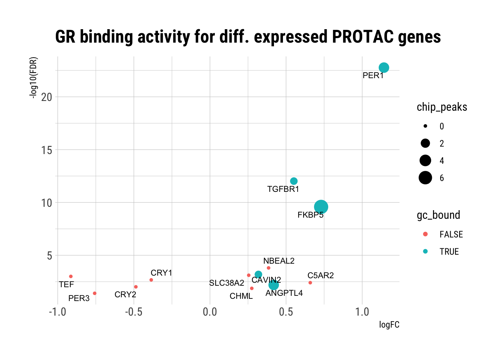

Q4: GR-binding to PROTAC genes
Dominique Paul
2022-07-07
Last updated: 2022-07-07
Checks: 6 1
Knit directory: GR-PROTAC-analysis/analysis/
This reproducible R Markdown analysis was created with workflowr (version 1.7.0). The Checks tab describes the reproducibility checks that were applied when the results were created. The Past versions tab lists the development history.
The R Markdown file has unstaged changes. To know which version of the R Markdown file created these results, you’ll want to first commit it to the Git repo. If you’re still working on the analysis, you can ignore this warning. When you’re finished, you can run wflow_publish to commit the R Markdown file and build the HTML.
Great job! The global environment was empty. Objects defined in the global environment can affect the analysis in your R Markdown file in unknown ways. For reproduciblity it’s best to always run the code in an empty environment.
The command set.seed(20220515) was run prior to running the code in the R Markdown file. Setting a seed ensures that any results that rely on randomness, e.g. subsampling or permutations, are reproducible.
Great job! Recording the operating system, R version, and package versions is critical for reproducibility.
Nice! There were no cached chunks for this analysis, so you can be confident that you successfully produced the results during this run.
Great job! Using relative paths to the files within your workflowr project makes it easier to run your code on other machines.
Great! You are using Git for version control. Tracking code development and connecting the code version to the results is critical for reproducibility.
The results in this page were generated with repository version 779ceb2. See the Past versions tab to see a history of the changes made to the R Markdown and HTML files.
Note that you need to be careful to ensure that all relevant files for the analysis have been committed to Git prior to generating the results (you can use wflow_publish or wflow_git_commit). workflowr only checks the R Markdown file, but you know if there are other scripts or data files that it depends on. Below is the status of the Git repository when the results were generated:
Ignored files:
Ignored: .DS_Store
Ignored: analysis/.DS_Store
Ignored: analysis/.Rhistory
Ignored: analysis/docs/.DS_Store
Ignored: data/.DS_Store
Ignored: data/EOS_files/
Ignored: data/reddy_bigwig_DEX12h_r123.bigWig
Ignored: data/reddy_bigwig_DEX2h_r123.bigWig
Ignored: data/reddy_bigwig_DEX6h_r123.bigWig
Ignored: data/reddy_bigwig_JUNB_DEX12h_r123.bigWig
Untracked files:
Untracked: analysis/08-Differential_binding.Rmd
Untracked: data/reddy_bed_DEX6h_r123.bed.gz
Untracked: data/results/SE.processed.rds
Untracked: data/single_replicate_peaks/
Unstaged changes:
Modified: analysis/01_download_files.Rmd
Modified: analysis/02_exploratory_analysis.Rmd
Modified: analysis/Q1-Gene-overlap.Rmd
Modified: analysis/Q2-TF-Binding-to-DE-genes.Rmd
Modified: analysis/Q4-GR-binding-PROTAC-genes.Rmd
Modified: analysis/admin.Rmd
Modified: output/Q2_GR_bound_DE_genes.xlsx
Modified: output/Q4_KH_DE_GR_bound.xlsx
Note that any generated files, e.g. HTML, png, CSS, etc., are not included in this status report because it is ok for generated content to have uncommitted changes.
These are the previous versions of the repository in which changes were made to the R Markdown (analysis/Q4-GR-binding-PROTAC-genes.Rmd) and HTML (docs/Q4-GR-binding-PROTAC-genes.html) files. If you’ve configured a remote Git repository (see ?wflow_git_remote), click on the hyperlinks in the table below to view the files as they were in that past version.
| File | Version | Author | Date | Message |
|---|---|---|---|---|
| Rmd | dd2072e | dominique-paul-uzh | 2022-06-22 | added remaining questions |
| html | dd2072e | dominique-paul-uzh | 2022-06-22 | added remaining questions |
| Rmd | 207afa6 | dominique-paul-uzh | 2022-06-21 | added question 3 |
| html | 207afa6 | dominique-paul-uzh | 2022-06-21 | added question 3 |
Question 4: Binding of GR to KH PROTAC treated DE genes?
Q: Is there a direct binding of GR to the 13 genes shown to be affected by the KH PROTAC?
Approach:
- What are the 13 PROTAC genes?
- Does GR bind to them?
# load the peaks
peakAnno <- readRDS("../data/EOS_files/Q2_annotated_peaks.rds")
# load our DE results
res_int_all <- readRDS(file="../data/results/DE_our_data.rds")
# get the data for the 18h KH-PROTAC treatment
kh.protac <- res_int_all[["18h KH-103"]]
# load the results from the peak frequencies
peakfreq <- readRDS(file="../data/EOS_files/Q2_gene_peaks.rds")
# merge peak frequency onto table and add binary variable
peakAnno_reduced <- as.data.frame(peakAnno) %>%
dplyr::select("nearestTSS.gene_name", "distance2nearestTSS", "class") %>%
dplyr::rename(Gene=nearestTSS.gene_name) %>%
dplyr::filter(Gene != "") %>%
group_by(Gene) %>%
dplyr::slice(which.min(abs(distance2nearestTSS)))
kh.protac <- left_join(kh.protac %>% mutate(Gene = rownames(kh.protac)),
peakfreq,
by="Gene") %>%
tidyr::replace_na(list(Freq=0)) %>%
mutate(gc_bound = Freq > 0) %>%
dplyr::rename(chip_peaks=Freq) %>%
dplyr::select(Gene, everything()) %>%
dplyr::left_join(peakAnno_reduced, by="Gene")
write.xlsx(file="../output/Q4_KH_DE_GR_bound.xlsx", kh.protac, rowNames=TRUE)Does GR-GC bind to a region closely associated with any of these 13 genes?
We have 13 genes that are differentially expressed at an <0.05 FDR level. The Reddy lab has analysed where the glucorticoid receptor (NR3C1) binds to after treatment with dexamethasone for 12h. We find that the GR is found to bind close to 5 out of the 13 differentially expressed genes.
# only keep the significant genes
kh.protac.sig <- kh.protac[kh.protac$FDR<0.05,]
kh.protac.sig[,c("Gene", "logFC", "FDR", "chip_peaks", "gc_bound")] Gene logFC FDR chip_peaks gc_bound
1 PER1 1.1428657 1.723020e-23 3 TRUE
2 TGFBR1 0.5510412 9.540295e-13 1 TRUE
3 FKBP5 0.7301845 2.624094e-10 7 TRUE
4 NBEAL2 0.3850139 1.572408e-04 0 FALSE
5 CAVIN2 0.3182665 6.525299e-04 1 TRUE
6 SLC38A2 0.2546515 7.788073e-04 0 FALSE
7 TEF -0.9140413 1.000325e-03 0 FALSE
8 CRY1 -0.3858283 2.141931e-03 0 FALSE
9 C5AR2 0.6589461 3.944310e-03 0 FALSE
10 ANGPTL4 0.4185862 6.415798e-03 3 TRUE
11 CRY2 -0.4867045 9.726164e-03 0 FALSE
12 CHML 0.2746874 1.352747e-02 0 FALSE
13 PER3 -0.7575232 3.989078e-02 0 FALSEplt_gr_binding <- ggplot(kh.protac.sig) +
geom_point(aes(logFC, -log10(FDR), colour=gc_bound, size=chip_peaks)) +
labs(title="GR binding activity for diff. expressed PROTAC genes") +
ggrepel::geom_text_repel(data=kh.protac.sig, aes(logFC, -log10(FDR), label=Gene, size=1)) +
theme_ipsum_rc()
plt_gr_binding
| Version | Author | Date |
|---|---|---|
| dd2072e | dominique-paul-uzh | 2022-06-22 |
ggsave(file="../docs/assets/Q4_1_kh_gr_binding.png", plt_gr_binding)Saving 7 x 5 in imagePlot signal tracks
Peaks found in bed file (not all 13 genes included)
peaks13g <- peakAnno[peakAnno$nearestTSS.gene_name %in% kh.protac.sig$Gene,]
tracks <- list("2h-DEX"="../data/reddy_bigwig_DEX2h_r123.bigWig",
"6h-DEX"="../data/reddy_bigwig_DEX6h_r123.bigWig",
"12h-DEX"="../data/reddy_bigwig_DEX12h_r123.bigWig")
signals <- signal2Matrix(tracks, peaks13g, w=5, extend=500)Warning in .checkRegions(filepaths, regions, verbose = verbose, trimOOR = FALSE): 8 region(s) (53%) were excluded because they were out of range of (some of) the file(s).
This usually happens when the genome annotation used for the files differs from that on which the regions were based.Reading ../data/reddy_bigwig_DEX2h_r123.bigWigReading ../data/reddy_bigwig_DEX6h_r123.bigWigReading ../data/reddy_bigwig_DEX12h_r123.bigWigpng(file="../docs/assets/Q4_2_kh_peak_tracks.png", width=12,height=7,units="in",res=1200)
h1 <- plotEnrichedHeatmaps(signals) #, left_annotation=peaks13g$nearestTSS.gene_name)#, width=unit(12, "cm"))
h1
dev.off()quartz_off_screen
2 h1
Plot the signal around the TSS of each of the 13 genes (all transcripts)
± 10’000 bps from TSS
ah <- AnnotationHub()snapshotDate(): 2021-10-20ensdb <- ah[["AH98047"]] # AH89211loading from cacherequire("ensembldb")Warning: package 'GenomicFeatures' was built under R version 4.1.2Warning: package 'AnnotationDbi' was built under R version 4.1.2Warning: package 'Biobase' was built under R version 4.1.1Warning: package 'AnnotationFilter' was built under R version 4.1.1mygenes.transcripts <- subset(transcripts(ensdb, columns=c("tx_id", "tx_name","gene_id","gene_name")), gene_name %in% kh.protac.sig$Gene)
mygenes.tss <- resize(mygenes.transcripts, width=2000, fix='start')
seqlevelsStyle(mygenes.tss) <- "UCSC"Warning in (function (seqlevels, genome, new_style) : cannot switch some of
GRCh38's seqlevels from NCBI to UCSC stylesignals2 <- signal2Matrix(tracks, mygenes.tss, w=10, extend=10000)Warning in .checkRegions(filepaths, regions, verbose = verbose, trimOOR = FALSE): 98 region(s) (87%) were excluded because they were out of range of (some of) the file(s).
This usually happens when the genome annotation used for the files differs from that on which the regions were based.Reading ../data/reddy_bigwig_DEX2h_r123.bigWigReading ../data/reddy_bigwig_DEX6h_r123.bigWigReading ../data/reddy_bigwig_DEX12h_r123.bigWigpng(file="../docs/assets/Q4_3_kh_all_txs.png", width=12,height=7,units="in",res=1200)
h2 <- plotEnrichedHeatmaps(signals2) #, left_annotation=peaks13g$nearestTSS.gene_name)#, width=unit(12, "cm"))
h2
dev.off()quartz_off_screen
2 h2
Plot the signal around the TSS of each of the 13 genes (one transcript per gene)
± 10’000 bps from TSS
mygenes_unique <- mygenes.tss[!duplicated(mygenes.tss$gene_name),]
signals3 <- signal2Matrix(tracks, mygenes_unique, w=10, extend=10000)Reading ../data/reddy_bigwig_DEX2h_r123.bigWigReading ../data/reddy_bigwig_DEX6h_r123.bigWigReading ../data/reddy_bigwig_DEX12h_r123.bigWigpng(file="../docs/assets/Q4_4_kh_unique_gene_tss.png", width=12,height=7,units="in",res=1200)
h3 <- plotEnrichedHeatmaps(signals3)
h3
dev.off()quartz_off_screen
2 h3
sessionInfo()R version 4.1.0 (2021-05-18)
Platform: x86_64-apple-darwin17.0 (64-bit)
Running under: macOS Big Sur 10.16
Matrix products: default
BLAS: /Library/Frameworks/R.framework/Versions/4.1/Resources/lib/libRblas.dylib
LAPACK: /Library/Frameworks/R.framework/Versions/4.1/Resources/lib/libRlapack.dylib
locale:
[1] en_US.UTF-8/en_US.UTF-8/en_US.UTF-8/C/en_US.UTF-8/en_US.UTF-8
attached base packages:
[1] grid stats4 stats graphics grDevices utils datasets
[8] methods base
other attached packages:
[1] ensembldb_2.18.4 AnnotationFilter_1.18.0 GenomicFeatures_1.46.5
[4] AnnotationDbi_1.56.2 Biobase_2.54.0 AnnotationHub_3.2.2
[7] BiocFileCache_2.2.1 dbplyr_2.2.1 epiwraps_0.99.42
[10] EnrichedHeatmap_1.24.0 ComplexHeatmap_2.10.0 GenomicRanges_1.46.1
[13] GenomeInfoDb_1.30.1 IRanges_2.28.0 S4Vectors_0.32.4
[16] BiocGenerics_0.40.0 hrbrthemes_0.8.6 ggplot2_3.3.6
[19] dplyr_1.0.9 openxlsx_4.2.5
loaded via a namespace (and not attached):
[1] utf8_1.2.2 tidyselect_1.1.2
[3] RSQLite_2.2.14 htmlwidgets_1.5.4
[5] BiocParallel_1.28.3 munsell_0.5.0
[7] ragg_1.2.2 codetools_0.2-18
[9] interp_1.1-2 withr_2.5.0
[11] colorspace_2.0-3 filelock_1.0.2
[13] highr_0.9 knitr_1.39
[15] rstudioapi_0.13 Rttf2pt1_1.3.10
[17] labeling_0.4.2 MatrixGenerics_1.6.0
[19] git2r_0.30.1 GenomeInfoDbData_1.2.7
[21] farver_2.1.1 bit64_4.0.5
[23] rprojroot_2.0.3 vctrs_0.4.1
[25] generics_0.1.3 xfun_0.31
[27] biovizBase_1.42.0 R6_2.5.1
[29] doParallel_1.0.17 clue_0.3-61
[31] locfit_1.5-9.5 bitops_1.0-7
[33] cachem_1.0.6 DelayedArray_0.20.0
[35] assertthat_0.2.1 promises_1.2.0.1
[37] BiocIO_1.4.0 scales_1.2.0
[39] nnet_7.3-17 gtable_0.3.0
[41] workflowr_1.7.0 rlang_1.0.3
[43] systemfonts_1.0.4 GlobalOptions_0.1.2
[45] splines_4.1.0 rtracklayer_1.54.0
[47] extrafontdb_1.0 lazyeval_0.2.2
[49] dichromat_2.0-0.1 checkmate_2.1.0
[51] BiocManager_1.30.18 yaml_2.3.5
[53] backports_1.4.1 httpuv_1.6.5
[55] Hmisc_4.7-0 extrafont_0.18
[57] tools_4.1.0 ellipsis_0.3.2
[59] jquerylib_0.1.4 RColorBrewer_1.1-3
[61] Rcpp_1.0.8.3 plyr_1.8.7
[63] base64enc_0.1-3 progress_1.2.2
[65] zlibbioc_1.40.0 purrr_0.3.4
[67] RCurl_1.98-1.7 prettyunits_1.1.1
[69] rpart_4.1.16 deldir_1.0-6
[71] GetoptLong_1.0.5 cowplot_1.1.1
[73] GenomicFiles_1.30.0 SummarizedExperiment_1.24.0
[75] ggrepel_0.9.1 cluster_2.1.3
[77] fs_1.5.2 magrittr_2.0.3
[79] magick_2.7.3 data.table_1.14.2
[81] circlize_0.4.15 whisker_0.4
[83] ProtGenerics_1.26.0 matrixStats_0.62.0
[85] hms_1.1.1 mime_0.12
[87] evaluate_0.15 xtable_1.8-4
[89] XML_3.99-0.10 jpeg_0.1-9
[91] gridExtra_2.3 shape_1.4.6
[93] compiler_4.1.0 biomaRt_2.50.3
[95] tibble_3.1.7 crayon_1.5.1
[97] htmltools_0.5.2 later_1.3.0
[99] Formula_1.2-4 tidyr_1.2.0
[101] DBI_1.1.3 rappdirs_0.3.3
[103] Matrix_1.4-1 cli_3.3.0
[105] parallel_4.1.0 Gviz_1.38.4
[107] pkgconfig_2.0.3 GenomicAlignments_1.30.0
[109] foreign_0.8-82 xml2_1.3.3
[111] foreach_1.5.2 bslib_0.3.1
[113] XVector_0.34.0 stringr_1.4.0
[115] VariantAnnotation_1.40.0 digest_0.6.29
[117] Biostrings_2.62.0 rmarkdown_2.14
[119] htmlTable_2.4.0 edgeR_3.36.0
[121] gdtools_0.2.4 restfulr_0.0.15
[123] curl_4.3.2 shiny_1.7.1
[125] Rsamtools_2.10.0 rjson_0.2.21
[127] lifecycle_1.0.1 jsonlite_1.8.0
[129] viridisLite_0.4.0 limma_3.50.3
[131] BSgenome_1.62.0 fansi_1.0.3
[133] pillar_1.7.0 lattice_0.20-45
[135] KEGGREST_1.34.0 fastmap_1.1.0
[137] httr_1.4.3 survival_3.3-1
[139] interactiveDisplayBase_1.32.0 glue_1.6.2
[141] zip_2.2.0 UpSetR_1.4.0
[143] png_0.1-7 iterators_1.0.14
[145] BiocVersion_3.14.0 bit_4.0.4
[147] stringi_1.7.6 sass_0.4.1
[149] blob_1.2.3 textshaping_0.3.6
[151] latticeExtra_0.6-30 memoise_2.0.1